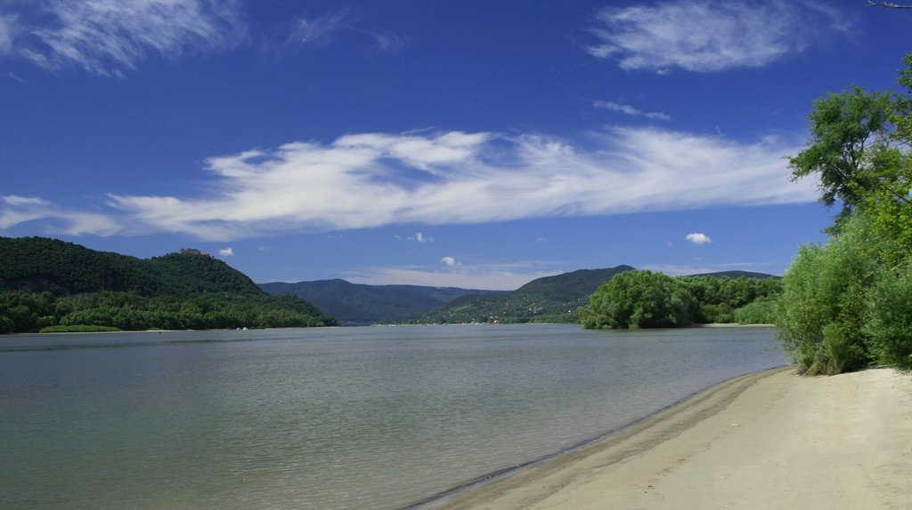
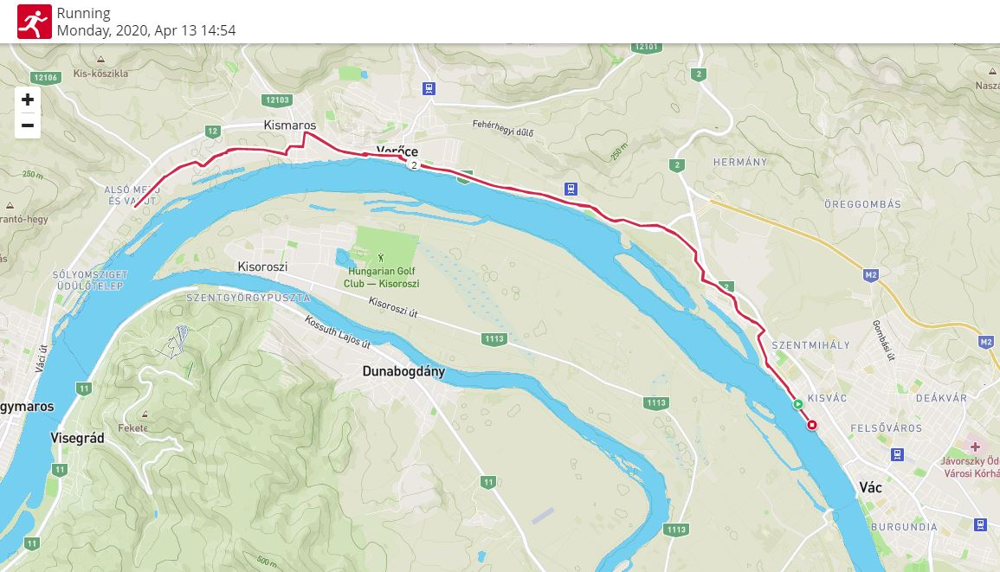
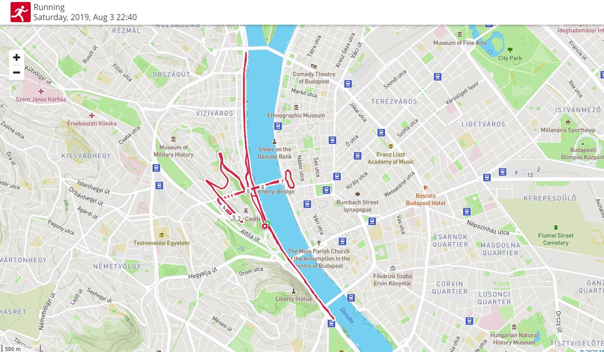
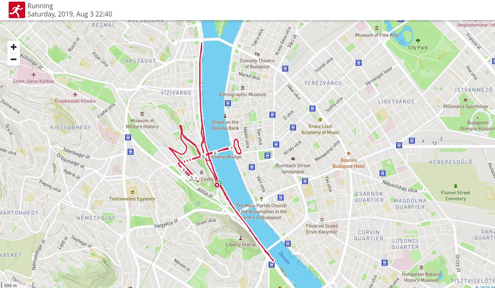
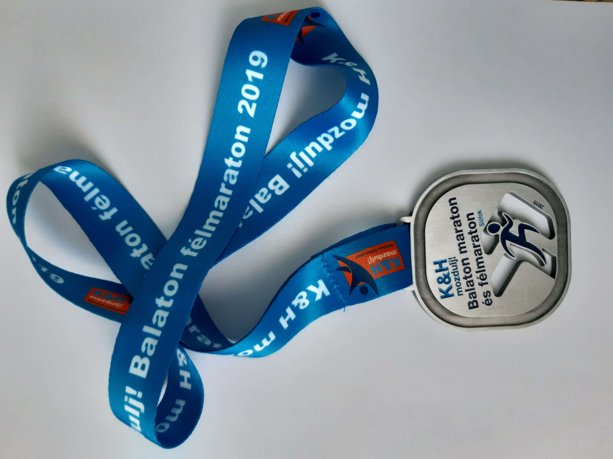
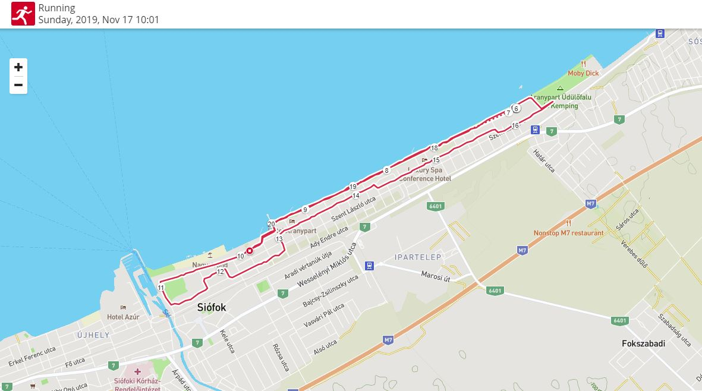

Futás
Futás
Futás
FutásA futás mindig is fontos szerepet játszott az életemben, ha az evezés nem fogott volna meg ennyire valószínűleg valamilyen futó versenyszámban készülnék az újabb és újabb versenyekre. A Dunakanyar az evezősök mellett a futóknak is remek lehetőséget biztosít a sportolásra, a folyó mentén kiépített bicikliútról az egész futás folyamán szép látvány tárul a szemünk elé. Az evezés mellett a futás egyfajta hobbi maradt, néha azonban előfordul, hogy egy-egy hosszabb távú versenyen így is elindulok. A 2019-es szezonban két nagyobb versenyen vettem részt, a Budapest Night Run-on és a Balaton Maraton és Félmaratonon. Mindkét versenyen félmaratoni távon indultam el és a kivilágított budapesti éjszakában illetve a balaton-parti napsütésben volt szerencsém teljesíteni a futamokat.
Egy futó edzés a Dunakanyarban
Vác-Verőce-Kismaros
 Budapest Generali Night Run 2019
Budapest, Várkert Bazár
 

K&H mozdulj! Balaton Maraton és Félmaraton 2019
Siófok, Petőfi Sétány
 